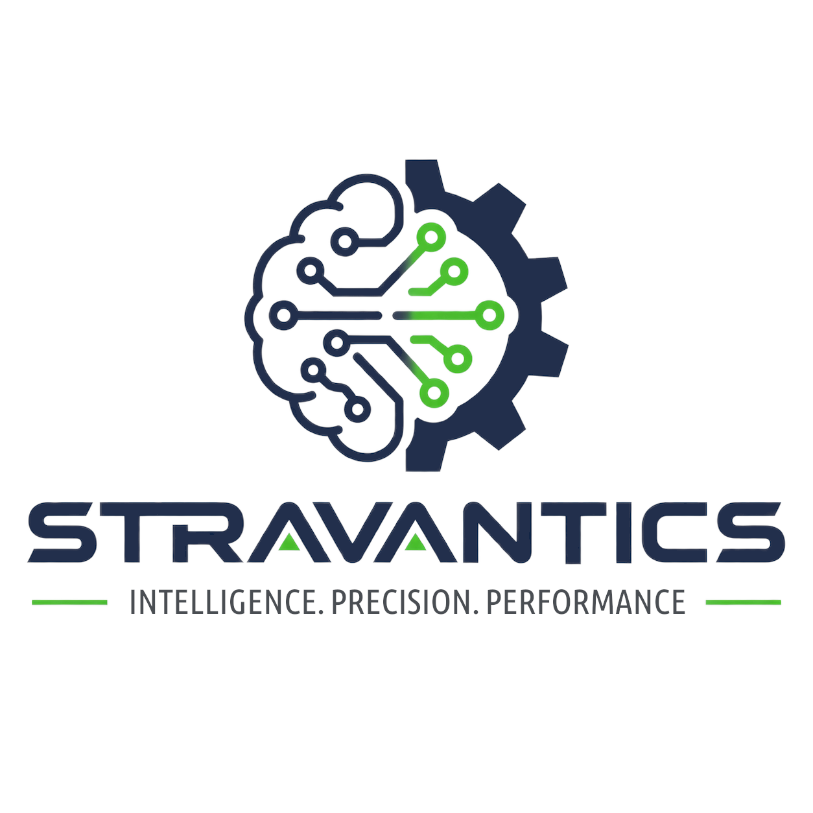

Fix what isn't working
Rethink the assumptions inherited from generations of enterprise software.
INTELLIGENCE · PRECISION · PERFORMANCE
Stravantics is Ferb's personal technology brand — exploring better ways to build, understand, and operate the software businesses depend on.

THE IDEA
Modern organizations generate enormous amounts of information, yet much of the software responsible for running them remains difficult to understand, difficult to change, and surprisingly difficult to report from.
THE PASSION PROJECT
A hyper-modern intelligent ERP for the businesses of tomorrow, beginning with professional services.
Cerebro is being designed from first principles around a simple belief: the systems that run a business should make its information more useful, not more difficult to access.
Rethink the assumptions inherited from generations of enterprise software.
Design for auditability, reportability, and a clear history of what happened.
Create software that can evolve with the organizations that depend on it.
Keep data accessible and give businesses meaningful control over their systems.
Fixing what's wrong with this generation of software and building the systems of tomorrow.
IN THE MEANTIME
I help organizations turn data into something they can actually rely on.
Available for Data Strategy Consulting and Fractional CDO engagements, with a focus on practical architecture, analytics, reporting, integration, governance, and long-term data strategy.
software@stravantics.com ↗THE FOUNDER
Stravantics is intentionally personal. It's a place for me to build, experiment, share what I learn, and eventually bring Cerebro into the world.
I've been writing Python since 2015 and spent six years volunteering with the Python Software Foundation. Professionally, I've spent the past six years working in Data Analytics and Engineering, architecting reliable data warehouses as well as reporting and integration solutions for enterprise environments.
Over the years, I've worked with and around the boilerplate systems that many businesses are confined to — platforms such as Dynamics, Infor, SAP, and Aderant. That experience has shaped a conviction that business software can be fundamentally better.
I also have Savant syndrome, a rare form of autism. It's one part of the person behind Stravantics, alongside a long-standing fascination with software, systems, data, and the challenge of making complicated things work beautifully.
FOLLOW THE BUILD
The project is just getting started. Follow along as the ideas become architecture, the architecture becomes software, and the software becomes something real.